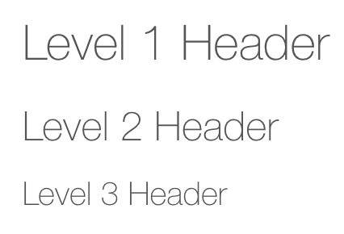
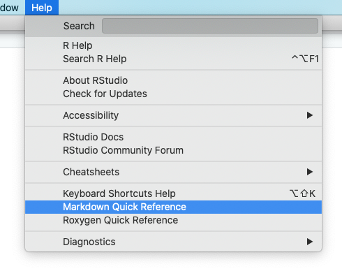

Create R Markdown reports
In this tutorial you will learn how to transform an R Markdown file into a polished report.
R Markdown files tell a complete story of your analysis with text, code, and metadata – and they do so in a reproducible way. We cover the essentials here.
Specifically, you will learn to:
- Knit your R Markdown file
- Use markdown for text formatting
- Customize the code and results visible to your report’s audience
- Format the output style of your report
Getting started
Before continuing, I recommend that you:
Navigate to the Files pane in the lower right hand corner of the IDE. Click on the blue R Project icon in the toolbar of the Files pane. This will ensure we are both starting from the same folder as you follow along with me.
R Markdown is a package that you don’t need to explicitly install or load. The RStudio IDE does this automatically when needed, so we can begin using it right away.
We’re ready to begin!
Knit your report
Open a new R Markdown document
Let’s open a fresh R Markdown document. Follow along with me to create a new untitled R Markdown document:

Remember you can expand the width of this tutorial by dragging the sidebar divider to the right if the images appear too small.
üß∂ Knit to HTML
Click the Knit icon in the toolbar. It is circled below. (Save your
file if prompted. I’m saving mine as “my-file.Rmd”.)

Give it a try! What happens?
What happened?
After knitting, a new file is created. Check your Files pane in the RStudio IDE, which appears in the bottom right of your screen. Can you identify the new file?
Knitting to HTML
The process of creating this polished-looking report is called ‘knitting’. And you have just knitted your R Markdown document to the HTML output format. Every time you click knit, this new HTML file is remade from scratch using the contents of your R Markdown document.
You can view the polished-report by opening up the HTML file in a web browser, but R typically opens it up automatically in a new window immediately after you knit.
The HTML file is the default output format, but other output formats are possible too:

Note: For PDF output, you may need to install the tinytex
package and then run tinytex::install_tinytex() before
knitting.
Report reproducibly
Whenever you knit, R Markdown runs all of your code from the top to the bottom of your document using a clean slate (i.e. a new R session) to make the polished report.
By design, this process forces you – the author of the report – to document every part of your analysis, making it easy for your colleagues (or your future self!) to reproduce and confirm your results.
For example, if any part of your code references something that is not documented in the R Markdown file, you will get an error message when you try to knit!
While you analyze your data, you should knit your report early and often to ensure that you are not forgetting to document key parts of your code.
Imagine you receive a draft of report from your colleague. In it, he explores data from the palmerpenguins package using a dplyr function.
Click the button below to download the report.
Let’s check out this file. Locate the file in your RStudio IDE and knit the document.
Hmm…when you try to knit his report you get an error:
## Error in eval(expr, envir, enclos): object 'body_mass_g' not foundInspect the document. What might be wrong? Can you fix it?
We’ll continue to work with your colleague’s report throughout this tutorial.
Now that you know how knitting helps keep your workflow reproducible, let’s discuss how you can format and customize R markdown reports.
Write with markdown
The “markdown” in R Markdown refers to a set of symbols, like
# and *, that you can use to format plain text
in your file. When you knit, markdown generates the formatted text as
headers, bolded text, etc., in the rendered report.
Consider the two documents you have knit so far. What does
the markdown symbol # do to plain text?
#️⃣ Headers
You can turn plain text into a header by starting the line with
hashtag symbols # and a space.
When you write
# Level 1 Header
## Level 2 Header
### Level 3 HeaderR Markdown will turn it into:

The line immediately above headers must be empty in order this to
work. Don’t forget to include a space after the #
either!
To see what other markdown formatting you can apply, go to the Markdown Quick Reference by going to the Help menu in the RStudio IDE.

This will pull up a guide in the Help tab of the RStudio file pane.

Markdown is not unique to R Markdown. Many other markdown-aware programs exist, including popular messaging platforms like Slack, Microsoft Teams, and WhatsApp, to name a few.
Use the Markdown Quick Reference to answer the next question.
Inline code
Return to your colleague’s knitted penguin report. How did your colleague get the name of the data set to appear in code font?
The
penguinsdata set comes from the palmerpenguins package.
Inline R code
Your colleague’s report contains another sentence with inline code. This time it appears to be R code:
This data set has
nrow(penguins)rows.
Insert an r immediately after the first backtick
(so that it looks like the text below) and re-knit the report.
What do you see?
This data set has
`r nrow(penguins)`rows.
Takeaway
You can use markdown to format plain text to insert things like:
# Headers
[links](https://example.com)
`Inline code`, using a leading`rwhen you want to evaluate inline R code
…and other elements in your document.
The Markdown Quick Reference under the Help menu of the RStudio IDE is a good reminder of your options.
Customize code and results
R Markdown lets you customize your report’s code and results, too. Let’s continue with your colleague’s penguin report to see how.
Click the button below to add the next section your colleague’s penguin report. It adds a code chunk that subsets a part of the data.
Then…
Knit your colleague’s report again and inspect the output. There’s something strange about this last code chunk. Can you spot what it is?
Code chunk options tell R Markdown how to handle a chunk when the report is knit.
Code chunk options
There are many different options you can add to a code chunk to customize your report’s output. Here are a few of the most useful:
| Chunk option | Effect in knitted report |
|---|---|
echo=FALSE |
Hides code but displays results. |
eval=FALSE |
Prevents the code from being run, so no results are displayed. |
include=FALSE |
Runs the code, but hides the code and the results. (Common for code chunks that load packages.) |
warning=FALSE |
Suppresses warning messages. |
message=FALSE |
Suppresses other, non-warning messages. |
error=TRUE |
Allows the report to knit, even if the code in the code chunk produces an error. |
out.width="100%" |
Rescales the output (plot or image) to take up only the specified
width. Can also be specified in pixels, e.g. "300px". |
You can find these and other code chunk options in the R Markdown cheat sheet, under the section “Embed Code with knitr”.

knitr is the name of one of the built-in packages that works with R Markdown under the hood to knit your report. All of the code chunk options that are available fall under this package. You can learn more about the knitr package here.
Use the table introduced above to help your colleague with the next section of the penguin report. Click the button below to add the new section, and then knit the report again.
Your colleague has added a plot and is wondering how to show the plot but hide the code and any additional output that this code chunk generates.
What can be added to the last code chunk so that only the plot (i.e. no code nor non-plot output is shown)? Select all that apply and then fix the report and re-knit to confirm your answer.
Multiple options can be applied to the same chunk by separating them with a comma. For example:
```{r echo = FALSE, out.width="50%", error=TRUE}
```⚙️ The setup chunk
The first chunk in an R Markdown document typically has a label:
setup.
You can choose to give other chunks in the R Markdown document a label, but each label must be unique. This can help you keep a long document organized.
```{r setup, include=FALSE}
knitr::opts_chunk$set(echo = TRUE)
library(palmerpenguins)
library(dplyr)
```The setup chunk is special. By giving it the label
setup, the RStudio IDE will execute its contents in the
background before any other chunk in the document is run.
This makes the setup chunk the best place to put content that many other chunks depend on.
You’ll often see a line like this in a setup chunk:
knitr::opts_chunk$set(). This is a way to apply global
chunks options for the entire R Markdown document. You can learn more
about this in Ch. 11 Chunk Options of the R
Markdown Cookbook.
Your colleague continues to work on the penguin report and has added some more code chunks.
Click the button below to add the new section, and then knit report again.
Then…
You encounter an error when trying to knit the updated report:
Error in parse_block(g[-1], g[1], params.src, markdown_mode) :
Duplicate chunk label 'plot1', which has been used for the chunk:
ggplot(
data = species_bills,
mapping = aes(x = bill_length_mm)
) +
geom_histogram() +
theme_minimal() +
labs(
x = "Bill length (mm)"
)
Calls: <Anonymous> ... process_file -> split_file -> lapply -> FUN -> parse_block
Execution haltedSelect the answer choice that identifies the problem, and then fix the error in the report.
Format with metadata
You’ve learned about text and code in R Markdown documents. Now, it’s time to learn about its metadata. Every R Markdown document can begin with an optional header that contains metadata:
The metadata is the part of the document that gives R Markdown the instructions for how to build and display the R Markdown report.
The metadata in between the two lines (---) are written
in a format called YAML (rhymes with “camel”).
You can edit the YAML metadata just like you edit the body of the R Markdown document. Next, let’s change the YAML metadata of your colleague’s report.
YAML stands for “YAML Ain’t Markup Language”), and each of its lines
consists of keys and values separated by colons
:. Key is a fancy word for the variable name that controls
a particular document option.
Customize HTML output
Edit the YAML metadata so that it looks like mine below. I have added two YAML options that will customize the HTML output. Be careful – YAML is fussy about indentation and spacing, so be mindful that your code looks just like mine below.
---
title: "Analysis of Palmer Penguins"
author: Your favorite colleague
output:
html_document:
toc: true
toc_float: true
tutorial:
id: "rmarkdown_intro/rmarkdown-survey"
---The indentation of a line means that it is a sub-option of the unindented option above it.
The last two lines of this YAML header (i.e. “tutorial:
and id:) are specific to Academy. We can ignore these. You
won’t have this in R Markdown documents that you create from
scratch.
Now that you have added new YAML sub-options, knit your colleague’s report once more.
Adding a table of contents with those YAML sub-options is a feature
of having output: set to html_document.
html_document has many other fun sub-options that can be
applied. Reader-friendly examples of many of these can be found in
Section 3.1 of R Markdown: The Definitive
Guide.
For an exhaustive list of HTML document sub-options, look up
html_document’s help page:
?rmarkdown::html_document.
Takeaway
Of special note are the following HTML document options, which can
all be used indented under html_document:
| HTML sub-option | Description |
|---|---|
|
Changes font and document colors. Choose from |
|
Controls the table style used to display a printed data frame. Choose from |
|
Allows code chunks to be toggled by the reader in the knitted report. |
|
Creates a dropdown menu with the option to download the source R Markdown file. |
That brings us to the end of this tutorial!
You’ve learned the basics of reporting with R Markdown. You can now:
- Keep your analysis reproducible by knitting early and often
- Format plain text with markdown to produce customized text styling
- Tailor the display of code, results, or both with chunk options
- Customize the appearance and settings of your report with YAML metadata
Happy knitting!